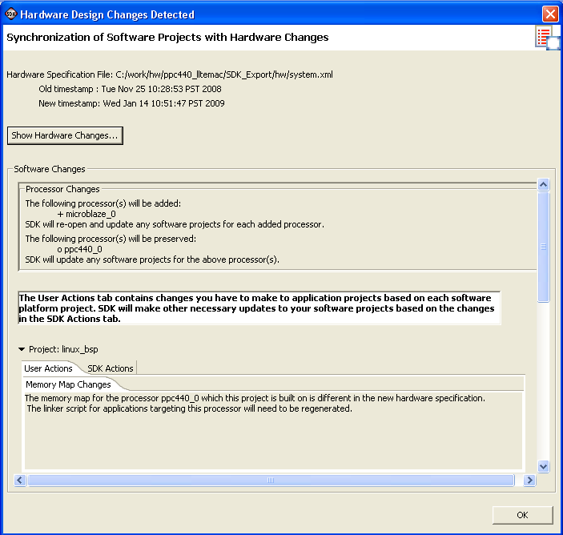

Embedded hardware components
Hardware specification file
When the Hardware Specification file used by the SDK workspace changes, SDK automatically detects this change and synchronizes the software projects to the changes in the hardware design. The Hardware Design Changes Detected dialog box opens.

In this dialog box, you can do the following:

Embedded hardware components
Hardware specification file
Copyright © 1995-2009 Xilinx, Inc. All rights reserved.